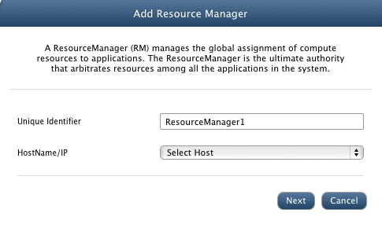
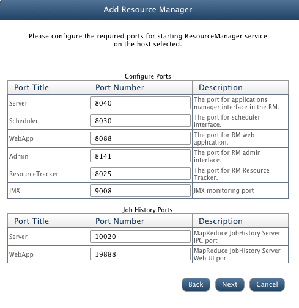
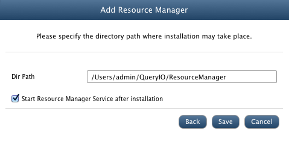
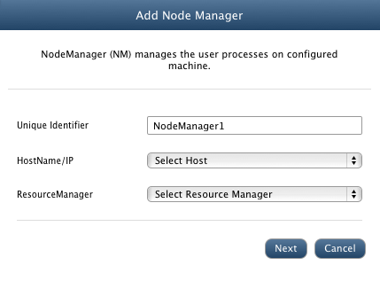
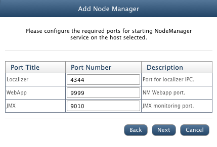
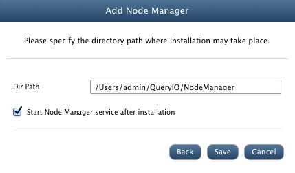

In this chapter
This document will show you how to configure MapReduce services using QueryIO.
It is assumed that you have already added required namenodes and datanodes to your cluster.
Add ResourceManager
- A ResourceManager (RM) manages the global assignment of computer resources to applications.
After you have added required machines to the cluster, you can add new ResourceManager.
- To add ResourceManager, Go to Hadoop > MapReduce > ResourceManager.
- Click on Add button. You will see the following window.

- In the Unique Identifier textbox, enter a unique identifier for ResourceManager.
- In the HostName/IP dropdown, select the IP/hostname of the host system on which you want to install the node.
- Click Next. You will see the following window.

- Here you can enter the port numbers for different services that QueryIO will start.
- Click Next. You will see the following window.

- In Dir Path textbox, enter the path for the directory where you want your ResourceManager to be installed.
- Make sure Start ResourceManager Service after installation checkbox is enabled. It will automatically start all the services for this ResourceManager.
- Click Save.
Add NodeManager
- There is a per-machine NodeManager (NM) that manages the user processes on configured machine.
After you have added required ResourceManager to the cluster, you can add new NodeManager.
- To add NodeManager, Go to Hadoop > MapReduce > NodeManager.
- Click on Add button. You will see the following window.

- In the Unique Identifier textbox, enter a unique identifier for NodeManager.
- In the HostName/IP dropdown, select the IP/hostname of the host system on which you want to install the node.
- In the ResourceManager dropdown, select the ResourceManager to which NodeManager will be configured.
- Click Next. You will see the following window.

- Here you can enter the port numbers for different services that QueryIO will start.
- Click Next. You will see the following window.

- In Dir Path textbox, enter the path for the directory where you want your NodeManager to be installed.
- Make sure Start NodeManager Service after installation checkbox is enabled. It will automatically start all the services for this NodeManager.
- Click Save.
You can add MapReduce jobs on your cluster.
Copyright © 2015 QueryIO Corporation. All Rights Reserved.
QueryIO, "Big Data Intelligence" and the QueryIO Logo are trademarks
of QueryIO Corporation. Apache, Hadoop and HDFS are trademarks of The Apache Software Foundation.